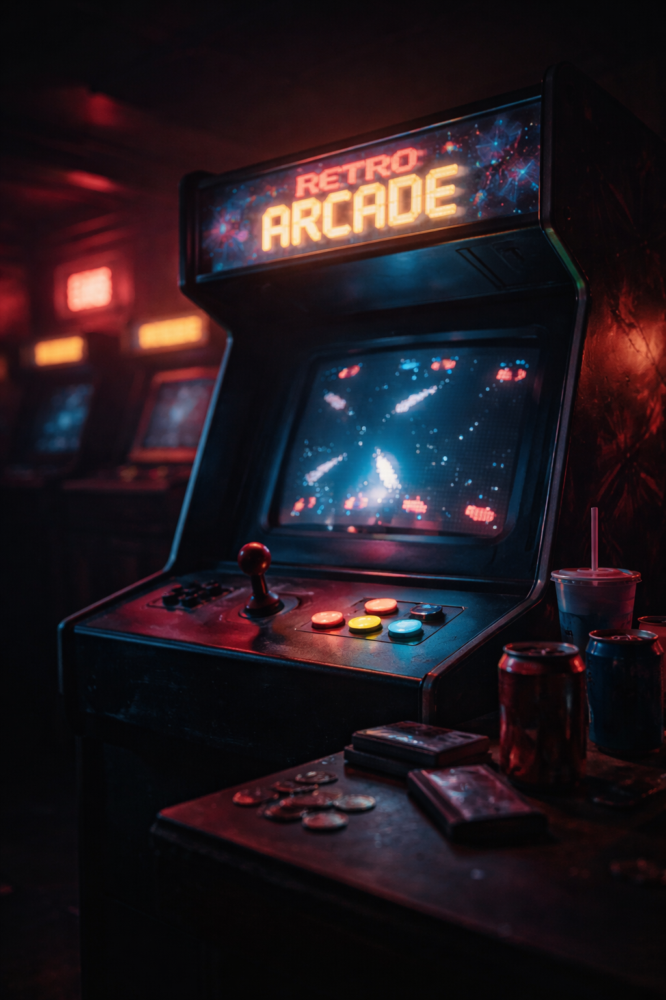

Games have been part of my life since childhood. My first memories are standing in front of arcade machines, completely absorbed in those glowing screens. That feeling of excitement and discovery stayed with me for years.
As time passed, I played games on many different platforms — computers, consoles, and everything in between. Gaming was never just entertainment for me. It was always something magical.
Eventually that passion turned into something more. Instead of only playing games, I decided to start creating them. OneBytePixel was born from that idea — a small independent studio built by someone who truly loves games.
Every game I create is made with care, curiosity, and a desire to keep improving. My goal is simple: create games that are fun, challenging, and bring a bit of the same joy I felt when I first discovered gaming.
Whether you are a hardcore gamer or just playing casually, I hope you will find something here that makes you smile.